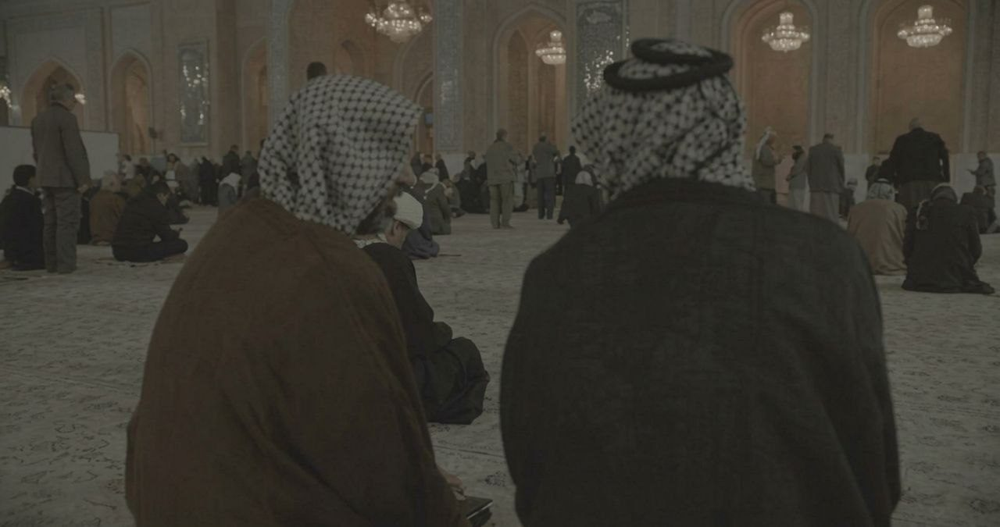
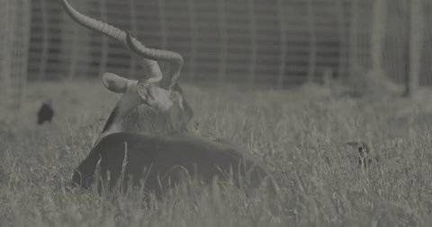

Automated audio cleanup
Neural denoise removes hum, hiss, and room reverb while preserving dialogue and ambience. Loudness-normalized for broadcast.
Denoise · dereverb · LUFSNVDEC → DeepFilterNet → SAM 2 → 3D LUT → RIFE → Real-ESRGAN → NVENC, in one GPU memory space. Neural audio cleanup, automatic mattes, AI grades, frame interpolation and 4K delivery — through a single API call.
Drag a slider to compare ungraded footage with FrameFrog's AI color grading — two real examples.

RAW GRADED
RAW GRADEDEach stage is an independent, GPU-accelerated service. Run the full seven-stage chain or just the pieces the job needs.
Neural denoise removes hum, hiss, and room reverb while preserving dialogue and ambience. Loudness-normalized for broadcast.
Denoise · dereverb · LUFSShot-boundary detection segments rushes into scenes automatically, enabling per-shot grading, editorial markers, and smart proxies.
Shot boundaries · markersReference-style matching and AI-assisted grade suggestions, applied through GPU-accelerated 3D LUTs for cinematic, consistent looks.
LUT engine · look matchingMotion-compensated RIFE interpolation to 60/120fps for silky slow-motion and smooth delivery — without reshoots.
RIFE · 60/120fpsSegment Anything 2 tracks subjects automatically or from a point/box seed, producing per-frame mattes with coverage reports.
SAM 2 · mattes · trackingTensorRT or Real-ESRGAN upscaling to 2160p, encoded through NVENC (h264/hevc) with an automatic libx264 fallback.
4K · TensorRT · NVENCFrames move through the chain without a round-trip through host memory. Each stage is an independent service; run all seven or only what the job needs.
Zero-copy CUDA: NVDEC frames stay resident for SAM 2, LUTs, RIFE, Real-ESRGAN and NVENC. No PCIe churn.
Submit footage to POST /v1/process, attach a webhook, and poll the manifest. Every job records stage timings, model graphs, encoders and cost.
curl -X POST https://api.framefrog.me/v1/process \
-H "Authorization: Bearer $FRAMEFROG_API_KEY" \
-H "Content-Type: application/json" \
-d '{
"input_uri": "s3://rushes/spot-01.mov",
"stages": ["audio_cleanup", "scene_detect", "color_grade", "interpolate", "upscale"],
"options": {"target_fps": 60, "lut": "cinematic_warm", "target_height": 2160},
"webhook_url": "https://studio.example/hooks/framefrog"
}'import os, time, requests
API = "https://api.framefrog.me/v1"
headers = {"Authorization": f"Bearer {os.environ['FRAMEFROG_API_KEY']}"}
job = requests.post(
f"{API}/process",
headers=headers,
json={
"input_uri": "s3://rushes/season-03/",
"stages": ["audio_cleanup", "scene_detect",
"color_grade", "interpolate", "upscale"],
"options": {"target_fps": 120, "lut": "teal_orange",
"target_height": 2160, "fanout": "auto"},
"webhook_url": "https://studio.example/hooks/framefrog",
},
timeout=60,
).json()
while True:
state = requests.get(
f"{API}/jobs/{job['job_id']}", headers=headers, timeout=30
).json()
if state["status"] in {"completed", "failed"}:
print(state["status"], state.get("artifacts"))
break
time.sleep(5)Signed input/output URLs, HMAC webhooks (X-FrameFrog-Signature) and per-stage GPU-second cost in every manifest. Need the OpenAPI schema? Ask contact@framefrog.me.
Decode, infer, grade, interpolate, upscale and encode without leaving device memory. Batch throughput scales with the GPU pool.
NVDEC surfaces frames as CUDA surfaces; SAM 2, LUTs, RIFE, TensorRT/Real-ESRGAN and NVENC consume the same buffers. Host RAM is only used for metadata and manifests.
| GPU | Role | Reference |
|---|---|---|
| L40S 48GB | Full chain with NVDEC/NVENC | 2.8–3.4× realtime |
| A100 80GB | SAM 2 / RIFE / TRT compute | 2.2–2.8× realtime |
| GPU pool | Queue fan-out per shot | Linear scaling |
Indicative internal reference for a 1080p → 2160p, 60 s reel; results depend on footage, shot count, models and engine build. Validate with python -m framefrog.gpu_check on your host.
Match 2–8 angles to a hero camera. Per-shot LUTs and reports keep every cut on the same look.
Look matching · per-shotHundreds of hours per event. Queue fan-out, proxy-first review and masters delivered without a render farm.
Batch · queue fan-outIntegrate the pipeline into an MAM, a CRM or a custom studio tool. Webhooks, signed URLs, no UI required.
REST · webhooks · signed URLsEvery stage runs as a stateless GPU function. Frames stay in device memory from NVDEC to NVENC; scale to zero when idle and fan out per shot when busy.
Join the FrameFrog waitlist. We'll reach out with onboarding for studios and creators.